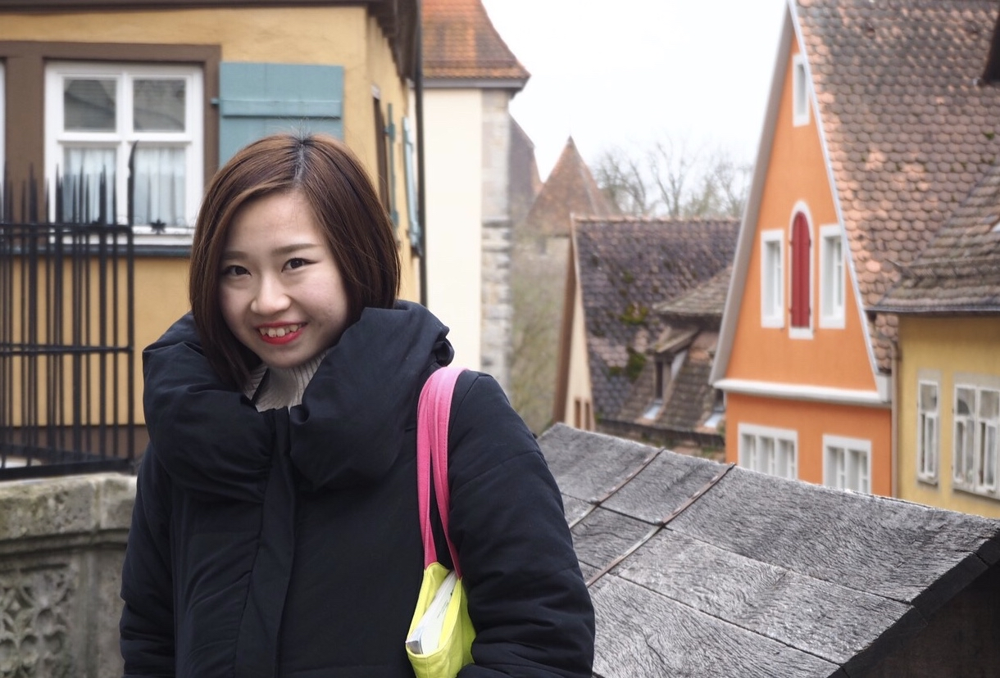
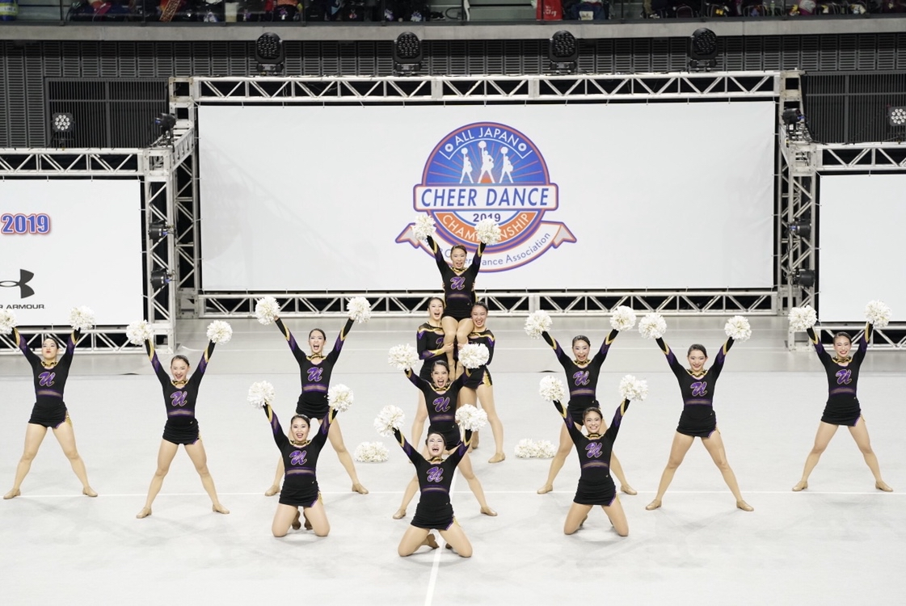
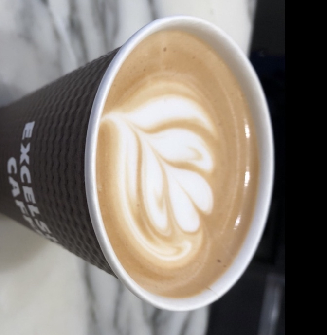

こんにちは！
ようこそ！私のページを見ていただきありがとうございます。
このページでは私のプロフィールや趣味を簡単に紹介します！
Who am I?
【Birthday】 11.20
【Holoscope】さそり座
【Hometown】東京
東急東横線・学芸大学駅が最寄りです！
Whats my hobby?
▲ 全国大会での演技
踊ることが大好きです！
小学校～大学まで15年 チアダンスという競技をしています。
この競技は映画 チア☆ダンでちょっぴり有名になりました
大学4年では全国大会で優勝しました！
Whats my Speciality?
高校～大学までEXCELSIOR CAFFEでアルバイトをしていました。時には週6回シフトに入っていたことも…。
バリスタとしてリーフやクマにも挑戦していました。
エスプレッソマシンを買って家で練習したいと思っています！